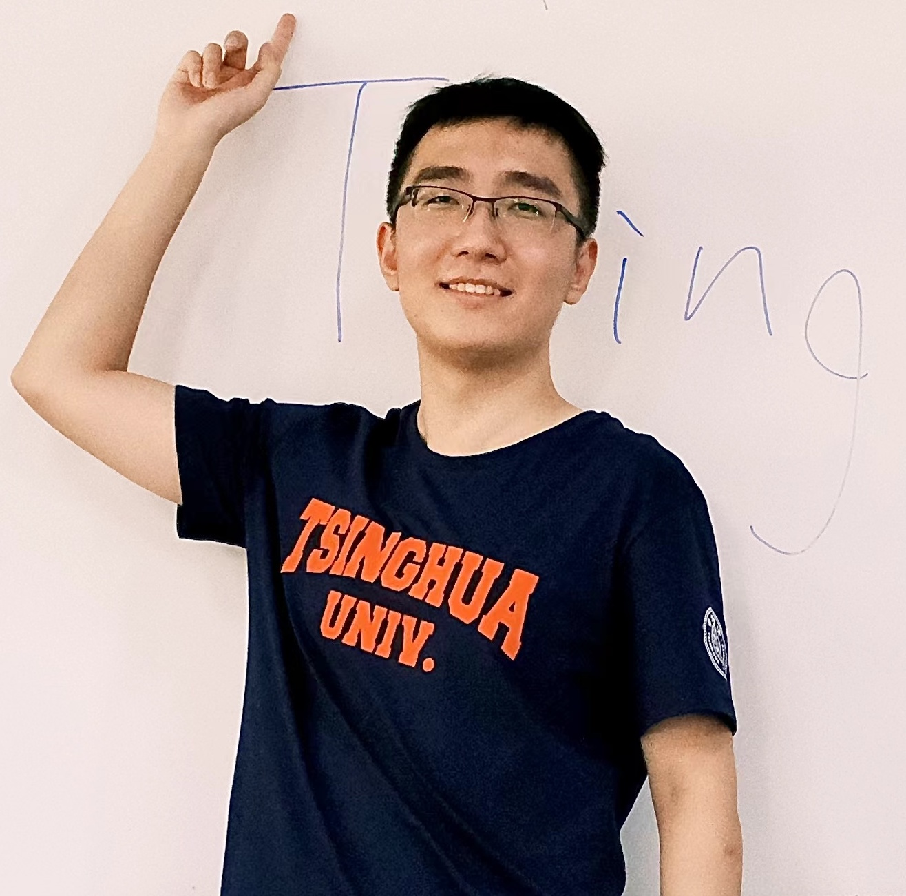
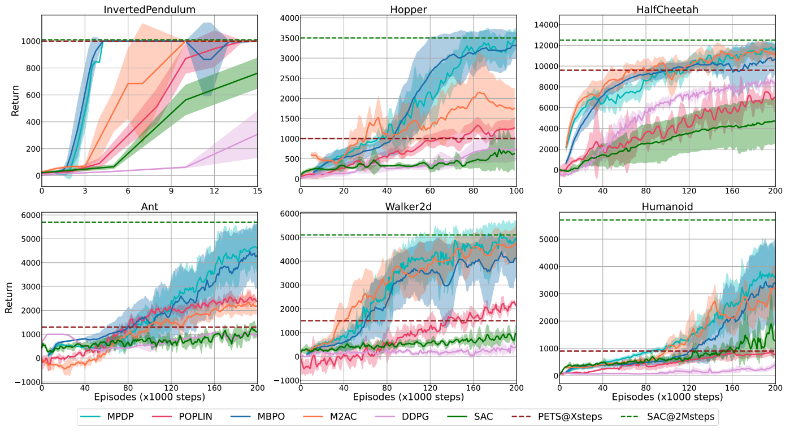
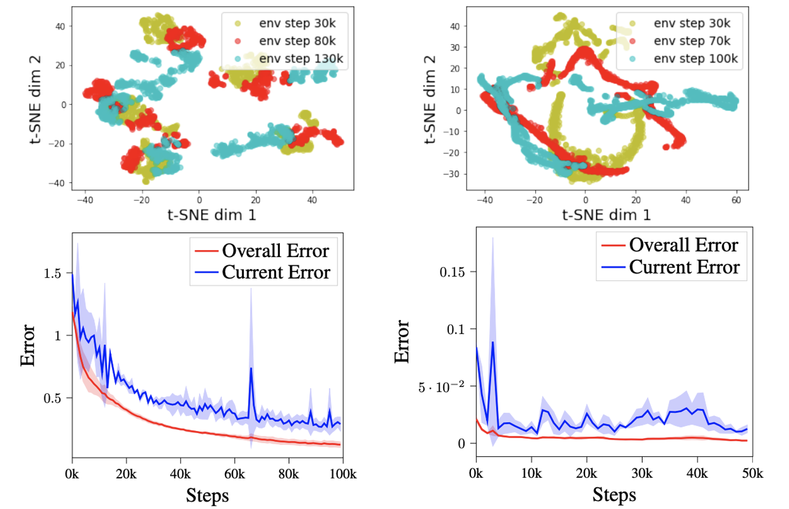
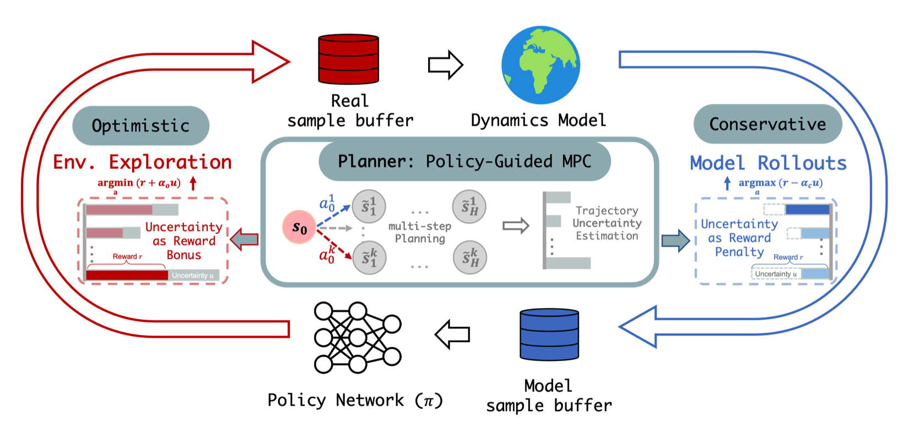
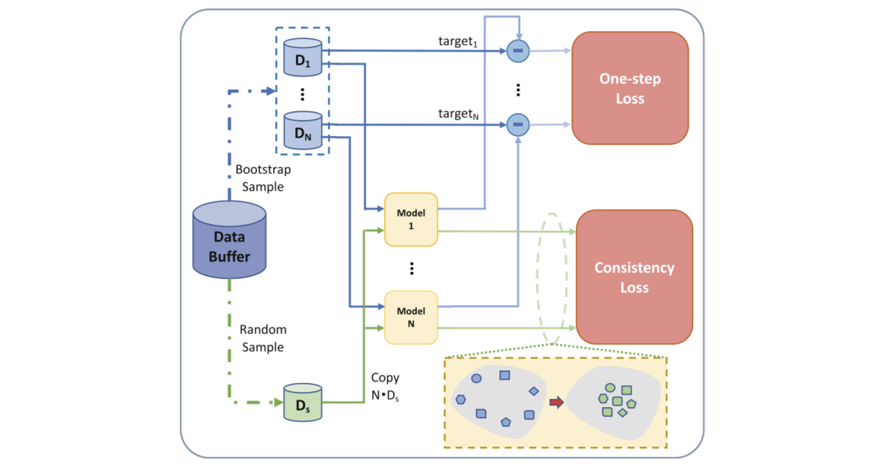

Ruonan JiaMaster Student
Tsinghua University |

|
I received my master degree in 2022 from Department of Automation, Tsinghua University, under the supervision of Prof. Xiu Li. I obtained my B.Eng. degree in Electrical Engineering and Automation from Shanghai University in 2019. I have been fortunate to closely work with Prof. Junge Zhang at Institute of Automation, CAS. And I was also fortunate to be an internship at OpenDILab @ Shanghai AI Lab.
My research interests lie in machine learning and deep reinforcement learning (RL), especially model-based RL. I maintain a webpage named awesome-model-based-RL for continually collecting related resources, and all contributions are welcomed.
My long-term goal is to make RL agents more efficient and more robust.
Collaboration is warmly welcomed!
|  |
Theoretically Guaranteed Policy Improvement Distilled from Model-Based Planning. Chuming Li*, Ruonan Jia*, Jie Liu, Yinmin Zhang, Yazhe Niu, Yaodong Yang, Yu Liu, Wanli Ouyang. (* equal contribution) European Conference on Artificial Intelligence (ECAI), 2023.(Oral) [Paper] [Code] [Page] |
|  |
Live in the Moment: Learning Dynamics Model Adapted to Evolving Policy. Xiyao Wang, Wichayaporn Wongkamjan, Ruonan Jia, Furong Huang. International Conference on Machine Learning (ICML), 2023.(Poster) [Paper] [Code] [Page] |
|  |
COPlanner: Plan to Roll Out Conservatively but to Explore Optimistically for Model-Based RL. Xiyao Wang, Ruijie Zheng, Yanchao Sun, Ruonan Jia, Wichayaporn Wongkamjan, Huazhe Xu, Furong Huang. International Conference on Learning Representations (ICLR), 2024.NeurIPS Workshop of Generalization in Planning (GenPlan @ NeurIPS), 2023. (Poster) [Paper] [Code] [Page] |
|  |
Consistency Regularization for Ensemble Model Based Reinforcement Learning. Ruonan Jia, Qingming Li, Wenzhen Huang, Junge Zhang, Xiu Li. The Pacific Rim International Conference on Artificial Intelligence (PRICAI), 2021.(Oral) [Paper] |
|
Excellent Comprehensive Scholarship, Tsinghua University, 2021 Outstanding Graduate of Shanghai, Shanghai Municipal Education Commission, 2019 National Scholarship, 2019 |
© RnJia 2024